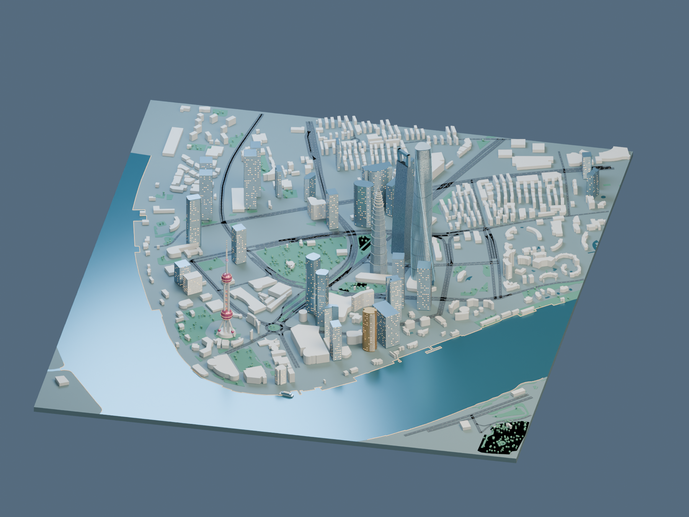

SHANGHAI · PUDONG
陆家嘴城市的
另一种尺度。
从黄浦江的转弯处，
看见一座城市向上的轮廓。
04地标建筑
502周边楼栋
632m天际线最高点
LUJIAZUI CORE / 01
地理对齐 · 建筑形体研究
01 / 城市全景交互三维
N
拖动旋转 · 滚轮缩放 · 右键平移
正在展开城市…加载本地 Blender 模型

当前环境无法启动三维视图
请使用支持 WebGL 2 的新版浏览器。
从黄浦江的转弯处，
看见一座城市向上的轮廓。
LUJIAZUI CORE / 01
地理对齐 · 建筑形体研究

请使用支持 WebGL 2 的新版浏览器。